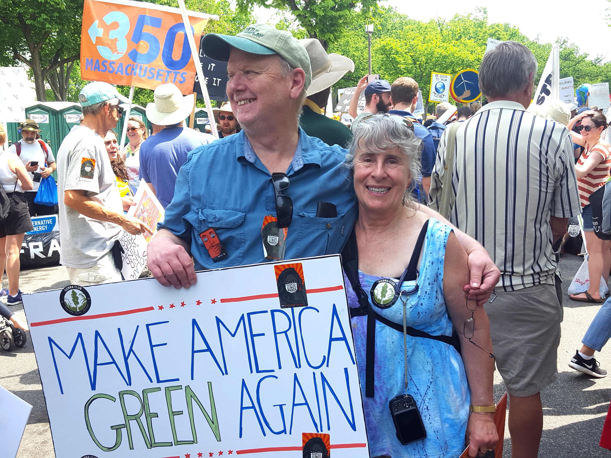

Re-Elect Jesse Barlow for State College Borough Council

Jesse's Positions
On State College Borough
- Continue Preservation of Borough Neighborhoods;
- Continue fiscally responsible government;
- Resolution on update to State College commitment on global climate disruption, renewable energy, and greenhouse gases;
- Embrace State College's diversity and its welcoming attitude toward all;
- Work toward a borough that attracts young professionals and families;
- Favor green growth strategies such as LEED standards for new buildings; and
- Listen to all community voices—student, long-term resident, short-to-medium term resident.

Jesse at the 2017 Climate March in Washington, DC with his partner, Nancy Parks.
State and Federal Advocacy
- Push state legislature to repeal or loosen pre-emption laws on taxation, guns, and broadband;
- Push PennDOT to make Atherton safer and more pedestrian-friendly in the Borough; and
- Advocate with our federal representatives on infrastructure needs, including broadband.